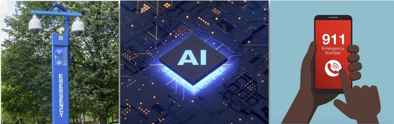

Urban UX Design
Promote the accessibility of the Univeristy of Michigan's emergency call system.


Project Info
My Role
Wireframing, Prototyping
Team Members
Haewon Park, Owen Sims
Tools
Figma, Adobe Illustrator
Duration
6 Weeks
Our Mission
We are Students Advocating For Emergency Response Systems [SAFERS], an independent, privately funded student group working to promote the accessibility of the University of Michigan’s emergency call system. There are hundreds of Emergency Blue Light Phones [EBLPs] on campus designed to connect students and faculty to campus police or medical professionals in the event of an emergency. However, this system is outdated and many EBLP towers are not in the pristine condition they once were, making them inaccessible for some and potentially unreliable. Accessibility is our mission. We began this process when we realized that the EBLP system is a vital lifeline in emergency situations, but that many are confused by or uncomfortable / unable to use them for a variety of reasons. Our goal is to collect data through the University of Michigan population to highlight to the University the need for the EBLP system to be replaced with newer, more modern, and more accessable devices. As a result SAFERS has created an app that members of the University of Michigan population can download that pays them to provide us with vital data on the EBLP system.
Object Prototype
The object prototype encompases the lenses and key componentsconsidered by SAFERS during the development of our study.
Propose the Interactive Data Collection App
The University of Michigan maintains a database of existing EBLPs on campus. However, this data is out of date (2016), inaccessible (took multiple weeks to acquire) and incomplete (several EBLPs are not listed). Our app represents a financially incentivized citizen data collection process to not only build a database of the current state of the University’s EBLPs, but also develops a database of new information about how accessible EBLPs are disabled members of the University’s population. This allows us at SAFERS to make an informed proposal to the University to make safety and accessibility a top priority. On their first login the app asks a few brief questions on the user’s ability status and then allows them to log entries on EBLPs as they go about their lives. Compensation is provided on a per entry basis and requires a minimum of 20 entries before they can cash out to ensure representitive data. When in proximity to an EBLP the user is prompted to log an entry. The user takes pictures of the EBLP and is then asked a series of questions. The app also uses the users photos to create a model of the EBLP to highlight which part of the EBLP is being asked about. Explore an example of a user logging in and completing an entry.
Sample Results from App
During the two months our app is operational, we hope to generate a robust database of users of varied abilities and subsequently an even more detailed set of data on the current status and accessibility of the EBLPs on campus. These tables represent a small scale trial run of the app’s usage and the data we can, and expect, to generate during the actual two month data collection period.
Further Action Based on Our Proposal
Given the data we hope to collect, we aim to pitch to the University of Michigan’s Procurement Department to replace the entire EBLP system with more modern and accessible devices. Using specific feedback from our data collection app we will be able to suggest specific features that are essential to the new sysetm that not only make them safer for the general population, but fully accessible to members of the Michigan community that may have disabilities or other factors making the current EBLP system inaccessible.
